the app will provide

Ways For
Organizations
To get help
Are you looking for an opportunity to make a positive contribution in your community? Key Conservation is passionate about improving animal welfare and supporting organizations with similar goals. However, we don’t do this work alone! Volunteers and supporters are welcome to join us every minute and every task, behind the scenes or right in the middle of an event, no contribution or time spent is too small. Together, it all adds up and helps us create a better world.
Conservation organizations all over the world are working tirelessly to stop extinction but they need our help.
If you'd like to be notified with new volunteer opportunities, please sign up for our mailing list.


The Key App will have a scrolling live feed that updates as needs from conservationists occur around the world in real-time. Supporters will be transported to the front lines alongside our conservationists and be given actionable steps they can take to make a real difference right then and there.
 

The Skilled Impact feature enables supporters to give their professional skills to help conservation organizations. For example, a graphic designer could help design an outreach campaign, a mechanic could help fix a patrol vehicle or a drone operator could assist with collecting data on a remote study area.
Tapping into these skills empowers supporters to share their expertise and experience with conservationists that need them to take their mission to the next level. Our hope is that sharing skills will help create a community around the work being done as well as a lifelong connection between an individual and a conservation organization.

The Skilled Impact feature enables supporters to give their professional skills to help conservation organizations. For example, a graphic designer could help design an outreach campaign, a mechanic could help fix a patrol vehicle or a drone operator could assist with collecting data on a remote study area.
Tapping into these skills empowers supporters to share their expertise and experience with conservationists that need them to take their mission to the next level. Our hope is that sharing skills will help create a community around the work being done as well as a lifelong connection between an individual and a conservation organization.


The Skilled Impact feature enables supporters to give their professional skills to help conservation organizations. For example, a graphic designer could help design an outreach campaign, a mechanic could help fix a patrol vehicle or a drone operator could assist with collecting data on a remote study area.
Tapping into these skills empowers supporters to share their expertise and experience with conservationists that need them to take their mission to the next level. Our hope is that sharing skills will help create a community around the work being done as well as a lifelong connection between an individual and a conservation organization.